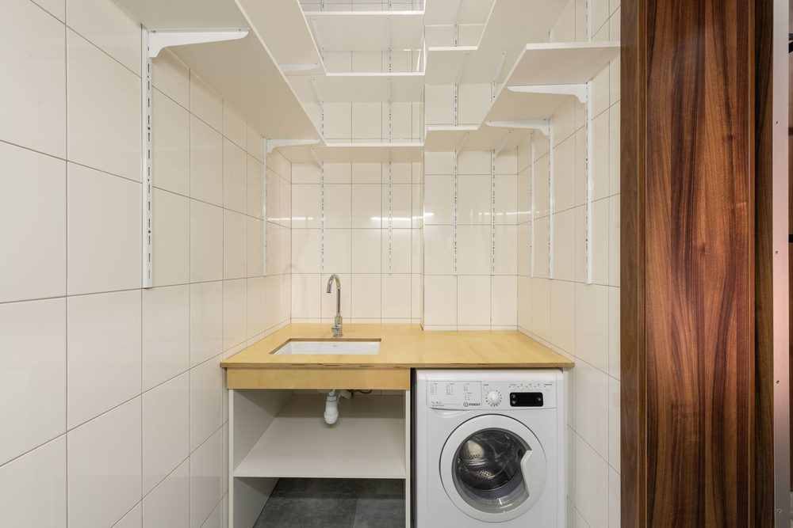

Scope, Audience, And Budget
In this apartment
Riya rents a one-bedroom in Austin. Her laundry sits in a 60 in wide alcove. She can add shelves and a folding counter if they stay removable, but she cannot move plumbing, add a dryer vent through an exterior wall, or drill a load-bearing concrete wall without written permission.
Write the space, the machines, and the money before you buy a board.
This book is millwork around machines that already exist: a folding counter, shelves, and labeled storage. It is not a license to install a washer, dryer, gas line, new drain, or new dedicated circuit. Hire a licensed plumber or electrician for those. A renter usually may use freestanding or limited-fastener millwork if the lease and HOA or landlord rules allow it. An owner may fasten into suitable structure after checking services in the wall.
All prices in this book are US dollars (USD). The worked millwork envelope is $200 for sheet goods, lumber, fasteners, primer, paint, caulk, and consumables for one compact alcove. It does not include the washer or dryer, plumber or electrician fees, appliance delivery, stacking kits, or tools you already own. If you use the worksheet outside the United States, convert the $200 envelope and check local product names and sheet sizes.
Pick one construction level before you shop. No-drill: freestanding frames, tension poles only where the maker rates them, and nothing that depends on wall screws. Limited-fastener: a few screws into identified structure, with landlord permission, a removal plan, and a load you can actually support. Permanent: owner approval, and professional help if the wall, vent, or electrics are uncertain. Removable is not the same as renter-safe. A frame that can tip, overload hollow plaster, or block hose shutoffs is not a weekend win.
Do this
- Write one sentence: balcony utility, internal wet area, or dedicated laundry closet — and whether you rent or own.
- Write the millwork envelope in USD and list what it excludes (machines, trades, tools).
- Circle no-drill, limited-fastener, or permanent before you sketch shelves.
Output
- Space and tenure written down
- $200 millwork envelope defined, exclusions listed
- Construction level chosen